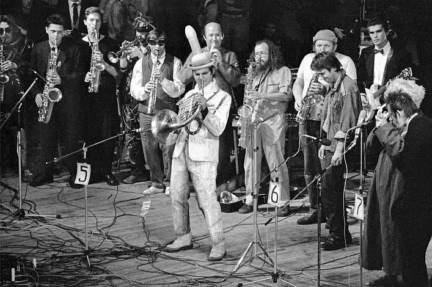

| Газета "Познаем прошлое" | Понедельник,21 января 1992г. |
|
В русском музыкальном авангарде следует Авангард 1910–1920-х годов Первый русский музыкальный авангард не Аванга́рдная му́зыка, музыка́льный аванга́рд —
вид современной академической музыки.
|
Исследователи отмечают, что ранний музыкальный авангард – явление «неочевидное», весьма неоднородное и оставившее сравнительно мало оформленных музыкальных опусов. Главным здесь был поиск некоего «нового мирослышания», «звукового миросозерцания», который отражался как в музыкальной ткани, так и в литературных манифестах (например, статья Н.Кульбина Свободная музыка, манифесты М.Матюшина К руководству новых делений тона, Лурье К музыке высшего хроматизма, Авраамова Универсальная система тонов; крупные теоретические трактаты Обухова и Вышнеградского и т.д.)и в «артефактах», каковы, например, первая футуристическая опера Победа над солнцем Крученых – Матюшина – Малевича – Хлебникова (1914) или Симфония гудков Авраамова (1922, «действо» фабричных гудков, проведенное в разных городах для оформления праздничных дат революционного календаря). |
Авангард 1960–1980-х годов. Хронологически первой осваиваемой «советским авангардом» техникой был сериализм (в разных видах), затем сонористика, а также алеаторика (композиция по принципу случайности); одновременно началось развитие электронной музыки. Довольно скоро «чистые» системы уступили место разным смешанным техникам:появились понятия «коллажа» (т.е. цитирования «чужого слова») и т.н. полистилистики – термин Шнитке, чьи сочинения наиболее ярко представляют данное явление. В этом пункте к началу 1970-х годов русский авангард «совпал» с некоторыми тенденциями западного искусства. Ко второй половине 1970-х годов, по наблюдениям критиков, стали складываться явления, называемые «новым традиционализмом», неоромантизмом, «новой простотой» и т.д. Вообще, к началу 1990-х годов или даже раньше в русской музыке, как и в западной, авангард «закончился»,т.е. исчез как явление с лидерами, организационной структурой и стилистическими параметрами.Группа композиторов «средне-молодого» возраста, которая продолжает именовать себя «авангардом», движется скорее по инерции, не встречая при этом никакого сопротивления (ее представительный орган – фестиваль Московский форум, принятый в качестве филиала Международного общества современной музыки). |
